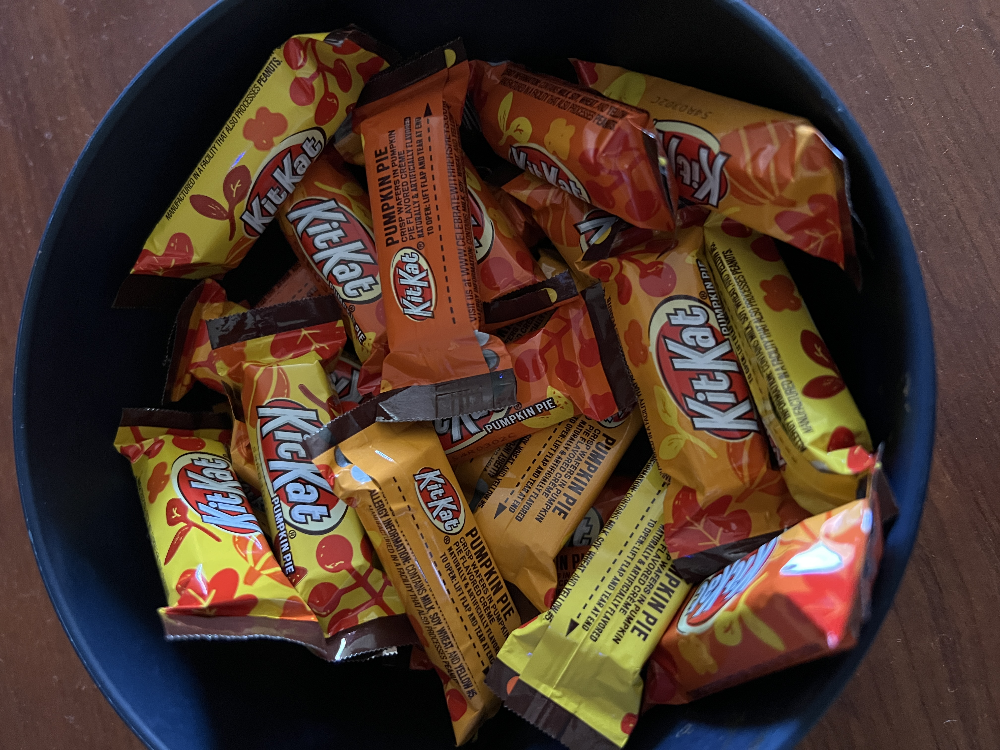

Pumpkin Obsession
Photo credits: Sara Barker
Author: Sara Barker
As fall has come around, I've had a weird obsession with pumpkin and pumpkin flavored items. I was never against pumpkin before, in fact, pumpkin is my favorite kind of pie. But, I've never been one for the pumpkin spiced lattes or pumpkin flavored muffins, etc. Something in my brain clicked this year though, and I've just been obsessed with pumpkin flavored things since early September. So far, I've bought pumpkin cream cheese bites, mini pumpkin pies, pumpkin pie flavored kitkats, pumpkin cream cheese muffins, and even pumpkin pie flavored greek yogurt! It's been absurd but no matter how many pumpkin flavored things I eat I still cannot seem to curb the craving for it. I hope I can curb the craving soon, because Christmas is just around the corner (which is terrifying) and I have to get prepared for all of the festive treats around then!